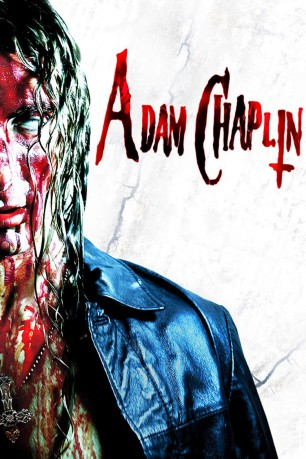

#10385 Adam Chaplin *OmU*
 
 IMDB-Wertung: 5.6 / 10
IMDB-Wertung: 5.6 / 10  Metascore: 0
Metascore: 0 
Die Stadt mit dem klangvollen Namen Heaven Valley ist in Wahrheit ein mörderisches Dreckloch, beherrscht von übermächtigen Syndikaten, die sogar die Polizei kontrollieren. Als seine geliebte Freundin wegen einer Nichtigkeit von dem Gangsterboss Denny Richards ermordet wird, wendet sich Adam Chaplin deshalb lieber gleich an höhere Mächte, schließt ein Pakt mit einem Dämon, Seele gegen Rache lautet das blutige Geschäft. Schon bald sterben die Schwarzwesten von Heaven Valley wie die Fliegen, denn ein neuer Killer ist in der Stadt.
Italienisch mit deutschen Untertiteln
Jahr: 2011
Dauer: 88 Minuten
FSK: 18
Land: Italien Studio: DFETonspuren:
Untertitel:
Auflösung: SD (720x394) Größe: 1146 MB
Genre: Action, Thriller, Horror, Sci-Fi, Krimi
Regisseur: Emanuele De Santi, Giulio De Santi
Drehbuch: Emanuele De Santi, Giulio De Santi
Soundtrack: Emanuele De Santi
Darsteller:
- Wilmar Zimosa als Mike Carrera
- Giulio De Santi als Derek
 Eric Balfour als Himself
Eric Balfour als Himself- Emanuele De Santi als Adam Chaplin
- Patricia Rodriguez als Fox
- Valeria Sannino als Emily
- Chiara Marfella als Denny Richards
- Christian Riva als Denny Richards
- Paolo Luciani als Ben
- Monica Muñoz als Mike Carrera
- Alessandro Gramanti als Clarence
- Enrique Sorres als Bad Homeless
- Sabriel Munoz als Innocent Homeless
- Emiliano Ferrosa als Scared Homeless
- Santiago Ortaez als Pickpocket
- Saveriq Gittari als Investigating Cop
- Carlos F. als Fat Cop
- Marco Obov als Scarred Cop
- Paolo Morsi als H.V.P.D Death Squadron
- Alessia Knox als H.V.P.D Death Squadron
- Maximilian Roxin als H.V.P.D Death Squadron
- Pablo Torquetz als H.V.P.D Death Squadron
- Manuel Spazio als H.V.P.D Death Squadron
- Sandro Piram als H.V.P.D Death Squadron
- Simone Benson als H.V.P.D Death Squadron
- Richard Maltini als H.V.P.D Death Squadron
Datei: X:\FSK18-2011\Adam Chaplin OmU (2011, FSK18, 720x394).mkv seit 02.01.2019
Festplatte: FSK18
 Es gibt insgesamt 30 Filme in der Gruppe 'FSK18-2011'
Es gibt insgesamt 30 Filme in der Gruppe 'FSK18-2011'